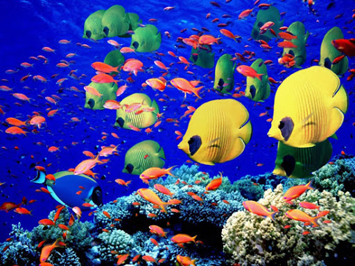

vida marinha Nas águas dos mares, os organismos podem encontrar alimento adequado. A principal fonte de alimentos essenciais encontra-se mais próxima da superfície - zona eufótica - e a maior parte dos seres vivos habita nesta zona. A vida marinha apresenta algumas alterações relativamente à de outras zonas do globo. Os fluidos dos vertebrados, por exemplo, são menos concentrados que a água dos oceanos e alguns têm de alterar a sua concentração por fenómenos de osmose. Em relação a este problema, pode discutir-se a existência de biozonas - tais como a zona eufótica - em que o meio marinho pode ser dividido. Para uma melhor compreensão da vida marinha, é necessário definir alguns termos que descrevem estes organismos com base na zona oceânica onde habitam e o significado das suas migrações. Existem áreas marinhas bem específicas consoante as suas características, designadamente as zonas planctónica, nectónica e bentónica. A zona planctónica é caracterizada pela existência de microrganismos - plâncton - que se deslocam com as correntes oceânicas. Isto não significa que os seres planctónicos não possuem a capacidade de locomoção. Muitos organismos possuem essa capacidade mas só são capazes de se deslocar lentamente ou estão limitados a movimentar-se verticalmente reduzindo substancialmente a sua posição horizontal nos oceanos. As plantas que têm este tipo de vida nas zonas superiores dos oceanos constituem o fitoplâncton e os animais constituem o zooplâncton. Recentemente descobriu-se que as bactérias com vida livre são muito mais abundantes na comunidade planctónica do que até há pouco se previa. Tendo uma dimensão média de 0,5 micrómetros, o bacterioplâncton encontra-se no início do seu estado devido ao seu tamanho.
O plâncton constitui a maior parte da biomassa da Terra e encontra-se à deriva nos oceanos. O volume do espaço da Terra inabitado por animais que não são arrastados ou não nadam excede o número de todos os animais que vivem na Terra e no fundo dos oceanos. Os organismos planctónicos variam em tamanho: desde as medusas e os sargaços (macroplâncton de tamanho compreendido entre os 2 e 20 cm) até às bactérias que são tão pequenas que podem atravessar filtros (picoplâncton - 0,2 a 2 micra). Uma forma adicional de classificar o plâncton é baseada na porção de seu ciclo de vida passado na comunidade planctónica. Alguns organismos, como por exemplo as diatomáceas e os copépodes, que passam todo o seu ciclo de vida na comunidade planctónica, constituem o holoplâncton. Muitos organismos, que são considerados nectónicos ou bentónicos porque na sua vida adulta ocupam estas zonas, são considerados, atualmente, com planctónicos pois no seu estado larvar fazem parte da comunidade planctónica e constituem o mesoplâncton.
